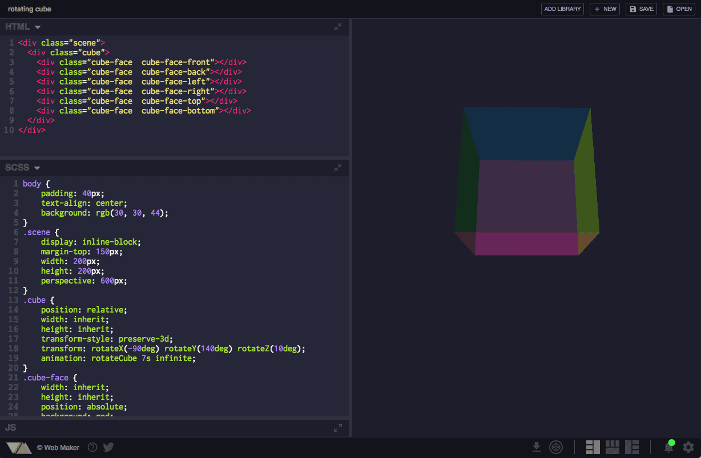
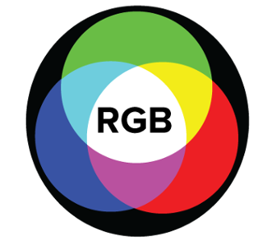

#06000a
Blog | learn The Code
Welcome to the blog of imad benhamou

Works Offline
Lives completely in your browser. There is no network involved, so it opens and shows previews instantly.
Quick Add Libraries
Drop in any library from the available list or put a URL of any other library you wish to add.
Preview screenshot capture
Feel like taking a screenshot of your awesome creation, just hit the Capture button to get a beautiful
screenshot of your result.
Multiple Layouts
Get exact same layout in front of you, that you last saved the creation in. Plus,
a full screen layout to see your work in actual browser window.

One Of The Best Editor's
Sublime Text Septembre 10, 2017
Goto Anything
Use Goto Anything to open files with only a few keystrokes, and instantly jump to symbols, lines or words.
Triggered with ⌘P, it is possible to:
Type part of a file name to open it.
Type @ to jump to symbols, # to search within the file, and : to go to a line number.
These shortcuts can be combined, so tp@rf may take you to a function read_file within
a file text_parser.py. Similarly, tp:100 would take you to line 100 of the same file.
Multiple Selections
Make ten changes at the same time, not one change ten times. Multiple selections allow you to interactively change many
lines at once, rename variables with ease, and manipulate files faster than ever.
Try pressing ⇧⌘L to split the selection into lines and ⌘D to select the next occurrence of the selected word. To make
multiple selections with the mouse, take a look at the Column Selection documentation.
Command Palette
The Command Palette holds infrequently used functionality,
like sorting, changing the syntax and changing the indentation settings.
With just a few keystrokes, you can search for what you want, without ever having to navigate through
the menus or remember obscure key bindings.
Show the Command Palette with ⌘⇧P.
Distraction Free Mode
When you need to focus, Distraction Free Mode is there to help you out. Distraction Free Mode is full screen,
chrome free editing, with nothing but your text in the center of the screen.
You can incrementally show elements of the UI, such as tabs and the find panel, as you need them.
You can enter Distraction Free Mode using the View/Enter Distraction Free Mode menu.

Apple's iPhone 8 is coming September 12.
Apple has a major iPhone redesign planned for 2017, with a glass body and edge-to-edge OLED display that does away with the Home button and perhaps replaces Touch ID with a new facial recognition system. The new iPhone may be sold alongside upgraded (but standard) 4.7 and 5.5-inch iPhones.
Professional digital design
Sketch gives you the power, flexibility and speed you always wanted in a lightweight and easy-to-use package. Finally you can focus on what you do best: Design.

Adobe Color CC
A classic tool to create color schemes with the color wheel or browse thousands of color combinations from the Kuler community.